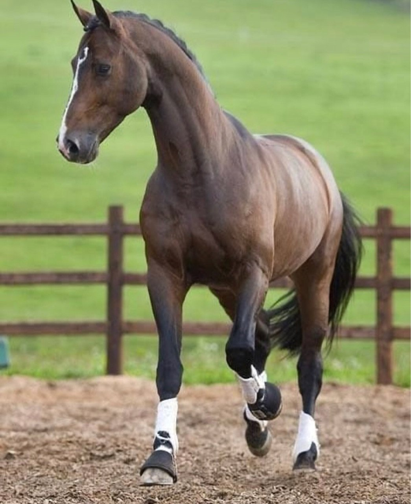

Ганноверская лошадь
Ганноверская лошадь — наиболее многочисленная полукровная порода в Европе. Она была основана в 1735 г. в Целле «для прославления державы» ганноверским принцем и впоследствии королём Англии Георгом II. Сегодня 8000 кобыл ежегодно привозятся на случку к жеребцам целльского конезавода. Во всем мире ганноверскую породу узнают по её тавру в виде латинской буквы «Н».
О породе
В наше время ганноверская полукровная является самой популярной спортивной породой в мире. Её можно увидеть на большинстве международных соревнований по конкуру и выездке. Это результат немецкой скрупулезности: ганноверская порода тщательно создавалась примерно в течение 300 лет — для различных, но специфических целей. Эта порода была выведена от некрасивого поголовья, улучшенного путём скрещивания с подходящими чистокровными верховыми, арабскими и тракененскими скакунами.
Характеристики породы
Ганноверские лошади обладают практически идеальным экстерьером[англ.], в котором четко прослеживаются черты английской чистокровной. Голова средней величины, с прямым профилем; взгляд живой.
Шея длинная и мускулистая, с изящным изгибом. Грудная клетка хорошо сформированная, плечо длинное и наклонное. Грудь глубокая. Спина средней длины, поясница мускулистая, бедра мощные. Ноги сильные, с крупными суставами. Копыта правильной формы.
Корпус ганноверской лошади должен вписываться в прямоугольник, но не в квадрат. Масть гнедая, рыжая, вороная, изредка серая и караковая. Высота в холке 154—168 см.Ганновераны импозантны и благородны, обладают прекрасными свободными движениями, что позволяет им добиваться больших успехов в выездке. Так же, ганновераны идеальные лошади для конкура. За счёт своего немалого роста им удается брать довольно большие барьеры
Коней для разведения отбирают не только по внешним и рабочим качествам. Большое значение уделяется уравновешенности темперамента. Излишне нервные кони могут быть забракованы.
Нрав и уход
Чистят ганновера специальными щетками и скребницами против роста волос, удаляя отмершие волоски и загрязнения. После этого животное обтирают влажной тканью и высушивают шерсть ветошью. Для придания лоска покрову лошади все части тела дополнительно чистят специальной рукавицей с накладкой из жесткой ткани. При этом направление движения руки должно совпадать с направлением роста волос.
Ганноверские лошади отличаются нравом, главные характеристики которого: гордость, смелость, спокойствие, чувствительность, добродушие и уравновешенность. К разведению не допускаются особи с неуравновешенной психикой. Благодаря таким особенностям использовать Ганноверских лошадей можно во всех видах спортивных конных дисциплин. Особенно хорошо они двигаются в аллюре, выполняют сложнейшие трюки, демонстрируя при этом силу и выносливость.
Использование породы
Ганноверские лошади используются преимущественно в классических видах конного спорта. Их основной специализацией является выездка. С 1993 г. Ганноверским союзом Германии реализуется программа совершенствования прыжковых качеств в породе для использования в соревнованиях по преодолению препятствий. Отдельные представители породы успешно выступают в троеборье, экипажной езде (драйвинге), вольтижировке.
Широко востребованы в любительской (рекреативной) верховой езде. Ганноверская порода занимает первые места в рейтинге Всемирной федерации спортивного коннозаводства по результатам выступлений представителей в выездке и конкуре. Также ганноверские лошади востребованы как улучшатели других спортивных пород.
Литература
- Элвин Хартли Эдвардс. Лошади. М.: Астрель. АСТ, 2006. — С. 144—145.
- Andrea Fitzpatrick. The Ultimate Guide to horse breeds. S. Webb and Son Distributors Ltd. 2004